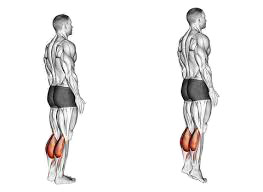
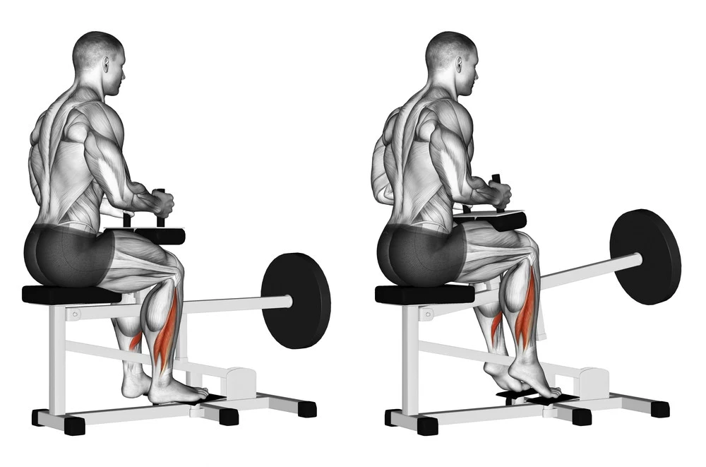

Standing Calf Raises
Step:1 Stand straight and vertical to the ground
Step:2 Place your feet in a narrow position
Step:3 lift your heels off the ground as if you were going to tip toe
Step:4 slowly descend back on your heel and repeat
Seated Calf Raises
Step:1 Adjust seat height so that your knee bends at a 90 degree angle
Step:2 Ensure the padding is tight against meat of your leg as to benefit the most from this exercise
Step:3 lift your heels up towards the sky to activate your calf muscles
Step:4 Slowly descend back to the starting point in a controlled manner